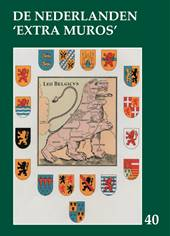

> publicaties > jaarboek 40 (2018)
|
omvang
|
208pp |
|
ISBN
|
9789071326394 |
|
prijs leden (inclusief verzendingskosten)
|
29 € |
|
prijs niet-leden (exclusief
verzendingskosten)
|
35 € |
Ook dit 40e Jaarboek De Nederlanden ‘extra
muros’ brengt weer een rijk palet aan bijdragen over de
randgebieden van onze Lage Landen die deel uitmaken van ons
geschiedkundig erfgoed. En als steeds openen we met de korte
bijdrage die zowat in een notendop het “programma” van Zannekin verwoordt.
Veertig opeenvolgende jaren telkens een
jaarboek uitbrengen is geen geringe opdracht gebleken. En in elk
daarvan was Marten Heida
vertegenwoordigt. In zijn
Bij de veertigste aflevering van ons Jaarboek – tevens
zijn afscheidsbijdrage – blikt hij terug op hoe deze onderneming
destijds van start ging en welke onvervangbare rol hij daarbij
gespeeld heeft.
In vorig jaarboek werd aandacht besteed aan
het thema dat centraal stond op onze Ontmoetingsdag van 2016 te
Belle: de Beeldenstorm. Daaromtrent had u nog de lezing van Wido Bourel over Beeldenstormers in de
Zuidelijkste Nederlanden tegoed, die we hierbij brengen.
In ons vorig jaarboek speurde Ruud
Bruijns na hoe het Nederlands bewustzijn omtrent de verloren
gegane Nederlandse territoria zich weerspiegelde in de 17e en
18e eeuwse pers, waarbij ook de verslaggeving over de Slag aan
de Penebeek van 1677 aan de orde kwam. Dit was voor Kristof Papin
aanleiding om dieper in te gaan op de toenmalige verslaggeving.
Uit z’n onderzoek ‘Fake
news’’ duikt op in de verslaggeving over de laatste slag van
Kassel blijkt dat het als hedendaags beschouwde
verschijnsel dat ‘fake
news’ genoemd wordt in feite van alle tijden is en ook
toen al volop woedde.
Ook Cyriel Moeyaert –
vrijwel in al onze jaarboeken vertegenwoordigt – is ook nu weer
van de partij. Zijn bijdrage is dit keer gewijd aan Het Nederlands in
Zuid-Komen door de eeuwen heen. Komen wordt in twee
gedeeld door de Leie, waarbij de overkant van de rivier Frans
grondgebied is, terwijl het aan deze kant van de Leie destijds
tot het Vlaams gewest behoorde maar sinds de vastlegging van de
taalgrens in België overgeheveld werd naar het Waals gewest. Het
is goed eraan te herinneren dat het in vroegere eeuwen
Nederlandstalig was.
In deze jaarboekaflevering besteden we
nogal wat aandacht aan de persoonlijkheid van priester Jean-Marie Gantois,
wiens plotse overlijden we in mei van dit jaar voor we 50e maal
herdachten. Hij lag immers aan de basis van het heropstarten van
Zannekin. Naast
een korte situerende biografische nota brengen we de integrale
vertaling van zijn Geestelijk
testament1,
dat hij neerschreef tijdens zijn internering na de Tweede
Wereldoorlog. Niet
zonder recht beschouwde de Normandische regiona-list Jean Mabire
dit ‘Testament spirituel’
als Gantois “Plus beau
texte: c’est une suite de réflexions sur la vie militante, où
beaucoup serait à citer – Ce texte, écrit en captivité, avant
un procès dont il ignorait totalement l’issue, prend en effet
l’allure d’un testament.”2
Met In het randgebied van de
Nederlanden. Een reportage in de Romaanse gouwen brengt Maurits Cailliau het
afsluitende tweede deel van het merkwaardig documentair verslag
uit 1944, waarin toen vanuit Vlaams-nationalistische hoek met
een voor dat tijdsgewricht opzienbarend verfrissende blik
gekeken werd naar het Nederlandse verleden van onze territoria
beneden de Belgische taalgrens.
Ruud
Bruijns is met twee bijdragen present. In Gerbrand Bruining, een
Friese Patriot en Heel-Nederlander herinnert hij aan een
merkwaardige persoonlijkheid die onverdiend in de vergetelheid
belandde en met Het
bewustzijn van de Nederlanden omtrent de verloren gebieden
tussen 1800 en 1829 speurt hij verder naar
Heel-Nederlandse getuigenissen, waarbij pertinente aandacht voor
de aan Frankrijk en Pruisen verloren gegane Zuidelijkste
Nederlandse gebieden toen nog als vanzelfsprekend ervaren werd.
Zeno Kolks behoort al evenzeer tot onze trouwe en
gewaardeerde jaarboekmedewerkers. Dit keer besteedt hij
andermaal aandacht aan ons bouwkundig erfgoed en wel aan Vakwerk in Oost-Nederland
en West-Duitsland.
Leo
Camerlynck brengt ons met Eupen en het Eupenerland
als speelbal van de grootmachten inzicht bij over het
Nederlands verleden van een regio die ten onrechte als te vaak
al historisch Duits ingeschat wordt.
Met de Kroniek en een handig
register over de
jaarboeken 36-40 sluiten we traditioneel ons jaarboek af.
Noten
1 In het allereerste Jaarboek De Franse
Nederlanden (1976) konden we de originele Franstalige
versie lezen, ingeleid door Eric Defoort.
2 Jean
Mabire, ‘Les éveilleurs de peuple, l’Abbé Jean-Marie Gantois’,
in Terre et Peuple,
nr. 15, 2003, pp. 40-43.